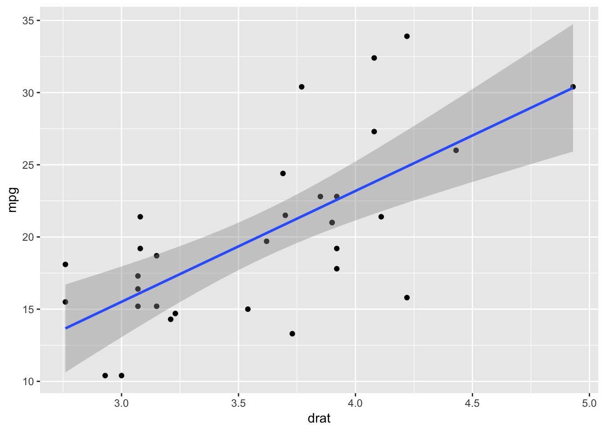

Title here
Author One Rutgers University email@rutgers.edu
References are cited as numbers. Here are a few examples. Previous studies found that certain things happen . Another person found that another thing happened , but some people don’t agree with the results .
dv ~ iv1 + iv2 + (1 + iv1 | id)| Lead | Short-lag | Long-lag | |
|---|---|---|---|
| English | /bdg/ | /ptk/ | |
| Spanish | /bdg/ | /ptk/ |
cars %>%
gather(var, val) %>%
group_by(var) %>%
summarize(mean_value = mean(val), sd_value = sd(val)) %>%
gt| var | mean_value | sd_value |
|---|---|---|
| dist | 42.98 | 25.769377 |
| speed | 15.40 | 5.287644 |

Take a look around the project example for a tour of useful column classes, etc.
Somebody probably helped you. Thank them here. :)